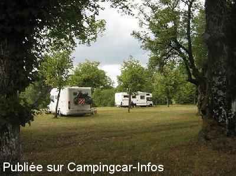
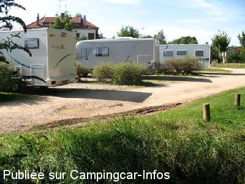

ASN = Aire de services avec stationnement nuit possible de :
CLAIRVAUX LES LACS
(N° 712)
Accès/adresse :
Route de Lons le Saunier D678
39130 CLAIRVAUX LES LACS
39130 CLAIRVAUX LES LACS
Latitude : (Nord) 46.5814° Décimaux ou 46° 34′ 53′′
Longitude : (Est) 5.74729° Décimaux ou 5° 44′ 50′′
Tarif : Gratuit
Type de borne : FLOT BLEU
Services :


Tous commerces à proximité
Baignade
Randonnées
Canoë-kayak
Tennis
Nombreuses visites dans les environs,
Cascades du Hérisson
Musée du jouet
Autres informations :
Ouvert toute l'année
Pas de services en période hivernale
6 emplacements
otsi@juralacs.com
http://www.juralacs.com

Le 16/08/2010 par cl&h

Le 14/09/2008 par DIDI 31
de
Ninou77
le 27/03/2016 :
Borne hors fonction plus de robinet d'eau uniquement vidange le 27/03/2016
Borne hors fonction plus de robinet d'eau uniquement vidange le 27/03/2016
de
roland 61
le 25/07/2015 :
Face à la Gendarmerie, Route de Lons le Saunier. Possibilité de 8/10 CC. Eau et vidanges gratuites. Très bruyante, passage de poids lourds la nuit. Magasin Atac à proximité.
Face à la Gendarmerie, Route de Lons le Saunier. Possibilité de 8/10 CC. Eau et vidanges gratuites. Très bruyante, passage de poids lourds la nuit. Magasin Atac à proximité.
de
Francis
le 06/07/2014 :
Trop proche de la route fort passante et bruyante. Nous avons préféré le camping ! ou le parking du centre ville.
Trop proche de la route fort passante et bruyante. Nous avons préféré le camping ! ou le parking du centre ville.
de
JD Boss Hogg
le 25/08/2013 :
The aire at the top of the town isn't very nice - big potholes in the road surface, a dirty service area and no point for dropping grey water. To avoid unless you are desperate.
The aire at the top of the town isn't very nice - big potholes in the road surface, a dirty service area and no point for dropping grey water. To avoid unless you are desperate.
de
bernard42
le 19/07/2013 :
aire sympa en face de la gendarmerie pour ceux qui sont inquiet.
proche de la route
beaucoup de circulation lors de notre passage le 12 juillet
magasin ATAC à deux pas
centre ville un peu loin
aire sympa en face de la gendarmerie pour ceux qui sont inquiet.
proche de la route
beaucoup de circulation lors de notre passage le 12 juillet
magasin ATAC à deux pas
centre ville un peu loin
de
claire
le 10/03/2012 :
Nous y avons dormi le 8 mars. 2 camping cars. En face de la gendarmerie. La borne ne fonctionnait pas. Peut être hors gel ?
Nous y avons dormi le 8 mars. 2 camping cars. En face de la gendarmerie. La borne ne fonctionnait pas. Peut être hors gel ?
de
cl&h
le 16/08/2010 :
Il y a une autre aire dans le haut du village, juste au-dessus du camping 'A la Ferme'. Pas de possibilité de vidange mais il y a un point d'eau. L'endroit est très calme et le centre se trouve à environ 500m.
Il y a une autre aire dans le haut du village, juste au-dessus du camping 'A la Ferme'. Pas de possibilité de vidange mais il y a un point d'eau. L'endroit est très calme et le centre se trouve à environ 500m.
de
DECRAEMER Alain
le 06/06/2009 :
Aire triste, beaucoup de trous remplis d'eau, impossibilité de descendre dans certaines, sinon les pieds dans l'eau. Nous sommes repartis, beaucoup ont fait la même chose. Aire à revoir, gratuite mais!!!!!
Aire triste, beaucoup de trous remplis d'eau, impossibilité de descendre dans certaines, sinon les pieds dans l'eau. Nous sommes repartis, beaucoup ont fait la même chose. Aire à revoir, gratuite mais!!!!!
de
odette le gac
le 11/09/2008 :
De passage au mois d'août, nous n'avons pu vidanger les eaux grises, la fonction étant interdite. Nous connaissons cette aire depuis un bout de temps et espérons que la municipalité fasse le nécessaire au + vite, de façon que les camping-caristes ne soient obligés d'aller ailleurs ou pire de vidanger sauvagement. Un petit reproche : la gadoue au pied de la borne ... mais c'est un beau pays oû nous allons souvent.
De passage au mois d'août, nous n'avons pu vidanger les eaux grises, la fonction étant interdite. Nous connaissons cette aire depuis un bout de temps et espérons que la municipalité fasse le nécessaire au + vite, de façon que les camping-caristes ne soient obligés d'aller ailleurs ou pire de vidanger sauvagement. Un petit reproche : la gadoue au pied de la borne ... mais c'est un beau pays oû nous allons souvent.
de
le 15/06/2008 :
Aire bruyante bordure de route. Vidange impossible, pas de grille. Il y a même un panneau "Interdit de vidanger", borne en mauvais état.
Aire bruyante bordure de route. Vidange impossible, pas de grille. Il y a même un panneau "Interdit de vidanger", borne en mauvais état.
de
Didier du 71
le 29/07/2007 :
Aire de service assez bien faite sauf que la grille de vidange "eaux usagées" est située au milieu du passage et ce n'est pas évident pour vidanger !
Par contre, pour les abords du lac, les CC ne sont pas les bienvenus, le seul parking près du lac est interdit aux CC. Si vous voulez aborder la plage, une seule solution: le camping !
Aire de service assez bien faite sauf que la grille de vidange "eaux usagées" est située au milieu du passage et ce n'est pas évident pour vidanger !
Par contre, pour les abords du lac, les CC ne sont pas les bienvenus, le seul parking près du lac est interdit aux CC. Si vous voulez aborder la plage, une seule solution: le camping !